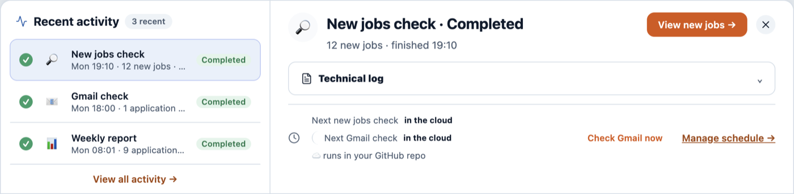
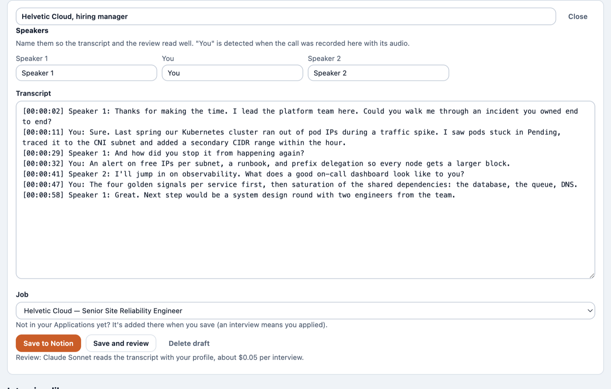
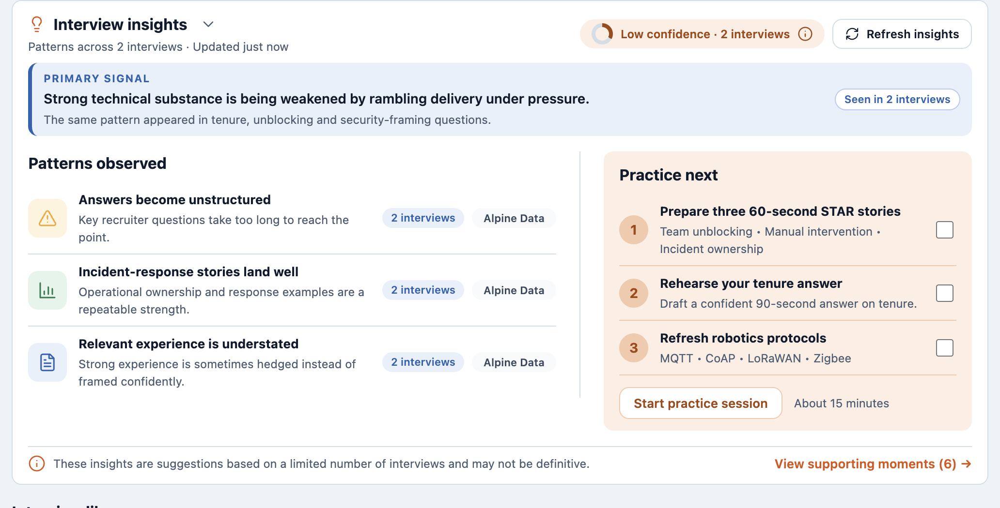
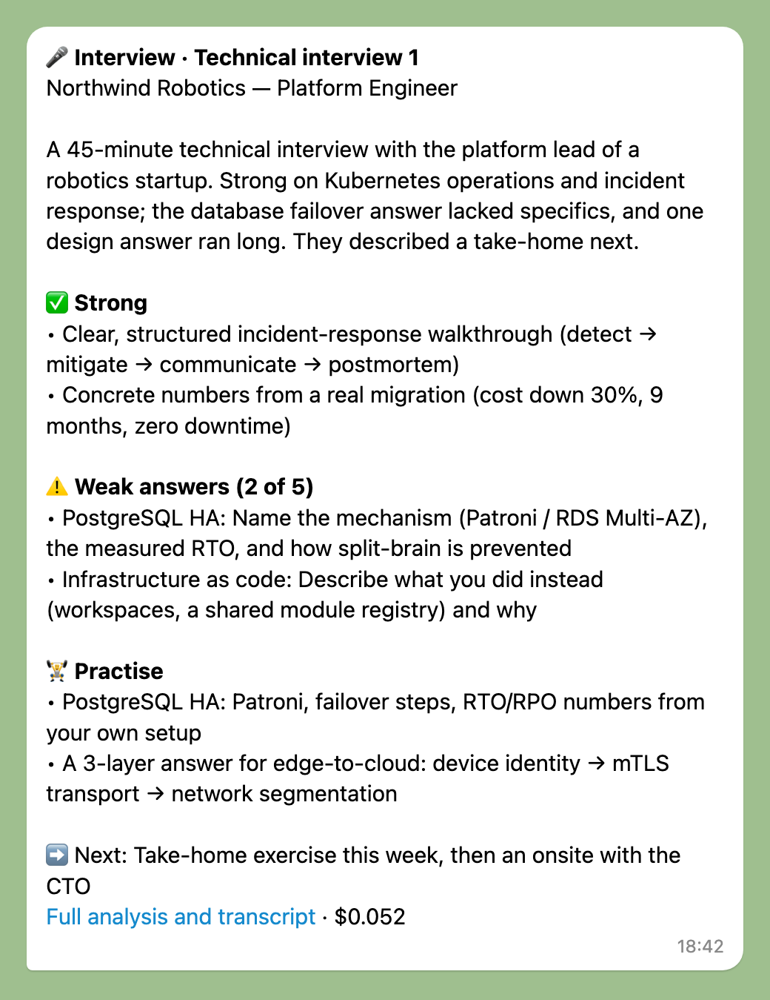

Your job search, one screen a day
Open it in the morning: it says what to do next, runs the rest, and tells you when it needs you.
Up close








Inside the app
What each screen does
- Focus
- A ranked to-do: reply to recruiters, review filled forms, apply to the next role
- Daily target
- How many applications a day, your progress, and reminders at the times you pick
- Your funnel
- Applied → reply → screening → interviews → offer, and the step to improve
- One-click answers
- What a form needs from you, with a suggested answer; saved for every later form
- A recruiter chat becomes a job
- Paste a message or drop screenshots: you confirm what it read, then the role is filled in and scored
- Interview prep kit
- Likely questions with what from your CV to answer, your gaps, and what to ask them
- Every cent, shown
- With your own AI key: each run shows what it cost, and a monthly budget pauses the extras before you overspend
- Recent activity
- Every search, email check and report, wherever it ran, with its result
- Always on, or off
- Runs while your computer is off, with your own free GitHub, or only on your computer
- Export, import, reset
- Your data in one file, whenever you want it
- Weekly backup
- Recordings and files to iCloud Drive or Documents; keys never leave your computer
Gets smarter every week
It learns you, then coaches you
Every interview, rejection, reply and form teaches it something: where you're strong, where you slip, what employers said.
- Your weak spots
- Topics you answered weakly come back in your next prep, to practise
- Patterns across interviews
- What keeps helping or hurting you, with a short practice list
- Why you were rejected
- Each rejection reviewed; the lesson is reused next time
- What employers said
- Feedback is kept with the job and worked into your preparation
- Where your search leaks
- The one step of your funnel to fix next
- Every form you fill
- Answer a question once; every later application gets it right